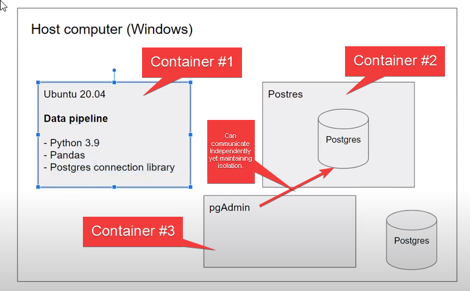
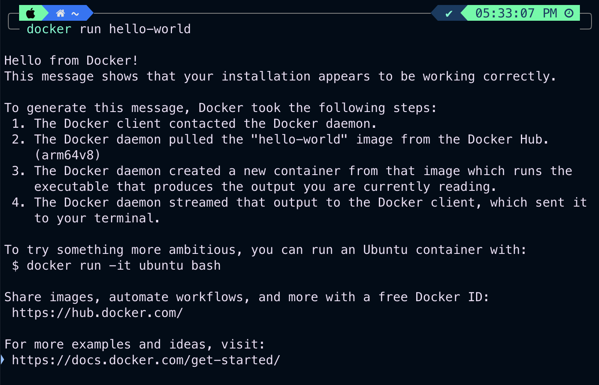
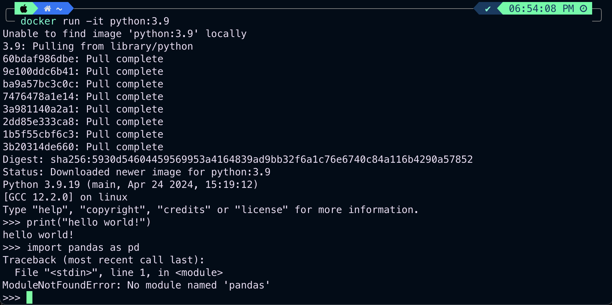

Docker
Module 1: Containerization and Infraestructure as Code
Docker
Terminology
Container: environment that runs an applications that is not dependent on the OS. Kind of like a lightweight VM. Containers are stateless; if you need to update the components inside, create another container instead.Image: template to create a container. Its components are defined by aDockerfile.Volume: storage area detached from the container for maintaining state.Foreground/interactivevsbackground/detached: a detached container runs in the background whereas an interactive container will usually have a terminal of some sort for interacting with.
Useful links
What is Docker?
Docker is a containerization software that allows us to isolate software in a similar way to virtual machines but in a much leaner way.
Docker delivers software in packages called containers. These containers are isolated from one another. If we run a data pipeline inside a container it is virtually isolated from the rest of the things running on the computer.
A Docker image is a snapshot of a container that we can define to run our software, or in this case our data pipelines. By exporting our Docker images to Cloud providers such as Amazon Web Services or Google Cloud Platform we can run our containers there.

We can run the container we have created through the docker image where we have specified and configured the environment beyond the host computer and essentially everywhere like - Google Cloud (Kubernetes), AWS Batch etc.
Docker Image ensures reproducibility regardless of the machine as the images are identical. We can specify OS, programming languages, packages, database type, tools etc. This solves the problem of “Works on my computer but NoT iN yOuRs.”
So, the advantages of working with Docker?
- Local Experiments: Helps to run things locally like your database also helps with testing like integration testing.
- Integration Tests (CI/CD).
- Reproducibility: Docker makes things run everywhere regardless of what you are using.
- Running Pipelines on the Cloud (AWS Batch, Kubernetes Jobs).
- Spark.
- Serverless (AWS Lambda, Google Functions).
Also, Docker containers are stateless: any changes done inside a container will NOT be saved when the container is killed and started again. This is an advantage because it allows us to restore any container to its initial state in a reproducible manner, but you will have to store data elsewhere if you need to do so; a common way to do so is with volumes.
How does Docker works?
First, you need to install it, so go to docker.com and follow the steps. Then you can type in your terminal
docker run hello-worldand Docker will:
- Go to DockerHub: this is a place where docker keeps all the images.
- It will look for an image called
hello-world, download it (alongside all the required packages), and it will run the image.
The ouput will look something like this:

As you can see, the output of this image suggest us to do something else:
docker run -it ubuntu bashhere, -it means interactive mode, so we are telling docker that after running the image we want to type something. Then, we want to run the ubuntu image, and bash is a command we want to run in this image. Basically, anything that comes after the name of the image is a parameter to this container. So after running this line we will have a container running a command line in ubuntu.
Let’s do something else, run a container with a specific python version:
docker run -it python:3.9this will run python 3.9 and will open a python interactive shell. Now, lets pretend we are running this container to run our pipeline.py and we need pandas. Let’s try importing it:

as you can see we can run something like print("hello world"!), but we cannot import pandas because we dont have it installed, and we usually install packages from the command line. To do this we modify the entrypoint of the container this way:
docker run -it --entrypoint=bash python:3.9wich tells docker to run the python 3.9 image and open a bash command line in the container. With this we can now do
pip install pandasto install pandas in this image. The problem here is when we leave the container the things we install dont stay there, the container comes back to its initial state.
So, we need to somehow add pandas when we create the image to make sure we always will have it. To do this we can create what is called a Dockerfile, wich is a file that contains all the instructions to create a new image.
The Dockerfile will look something like this:
FROM python:3.9
RUN pip install pandas
ENTRYPOINT [ "bash" ]What everything here means:
FROMsay wich base image we want to use.RUNdeclares the command you want to run in the command line as soon the base image is set.ENTRYPOINTdeclares the entry point for the docker image using a list as an argument.
Now we can built this new image by typing:
docker build -t test:pandas .What everything here means:
buildis to build the image from a Dockerfile.-tName and optionally a tag in thename:tagformat.builds the image in the actual repository
Now that we build the image, we can run it:
docker run -it test:pandasand finally we have pandas inside the container, cool! Now let’s do something more exciting. Let’s create a file called pipeline.py and write in it:
import pandas as pd
# doing some fancy stuff with pandas
print("Pandas installation was successful! Yeah!")now, lets copy this file (that is in our current work directory) in the Dockerfile image. To do this we modify the Dockerfile:
FROM python:3.9
RUN pip install pandas
WORKDIR \app
COPY pipeline.py pipeline.py
ENTRYPOINT [ "bash" ]here, we have:
WORKDIR \appis the working directory where the filepipeline.pywould be copied to.COPY A B: hereAis the source file in the host machine to be copied with, andBis the name for the destination file in the image.
Now we can build the image again by doing:
docker build -t test:pandas .note that we use the same tag so it will override the previous image. And we can run it by doing:
docker run -it test:pandasAnd we can check that our pipeline.py is there and working by running:
python pipeline.pysince we are already in the \app directory. But, in order to call this a “data pipeline” the container should be self-sufficient, we dont want to run the container and manually run the pipeline.py file. Also, we want to add some parameters to this pipeline.
To do this we modify the pipeline.py file:
import sys
import pandas as pd
# sys.argv allows to pass arguments to the script from the commandline
print(sys.argv)
# sys.argv[0] > name of the file
# sys.argv[1] > first argument passed
day = sys.argv[1]
# Here can go the pandas code
print(f"job finished successfully for for day = {day}")Now that we change the file to agregate arguments, we need to modify the Dockerfile ENTRYPOINT to execute the pipeline.py file:
FROM python:3.9
RUN pip install pandas
WORKDIR \app
COPY pipeline.py pipeline.py
ENTRYPOINT [ "python", "pipeline.py" ]now we build the docker image:
docker build -t test:pandas .and we run it with an argument like this:
docker run -it test:pandas 2024-06-02